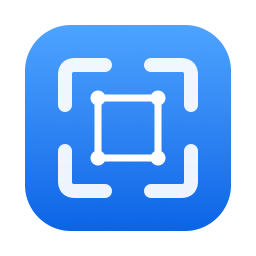
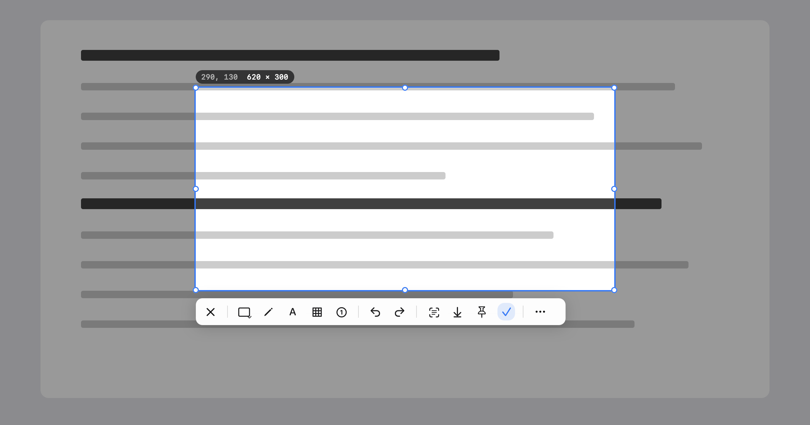
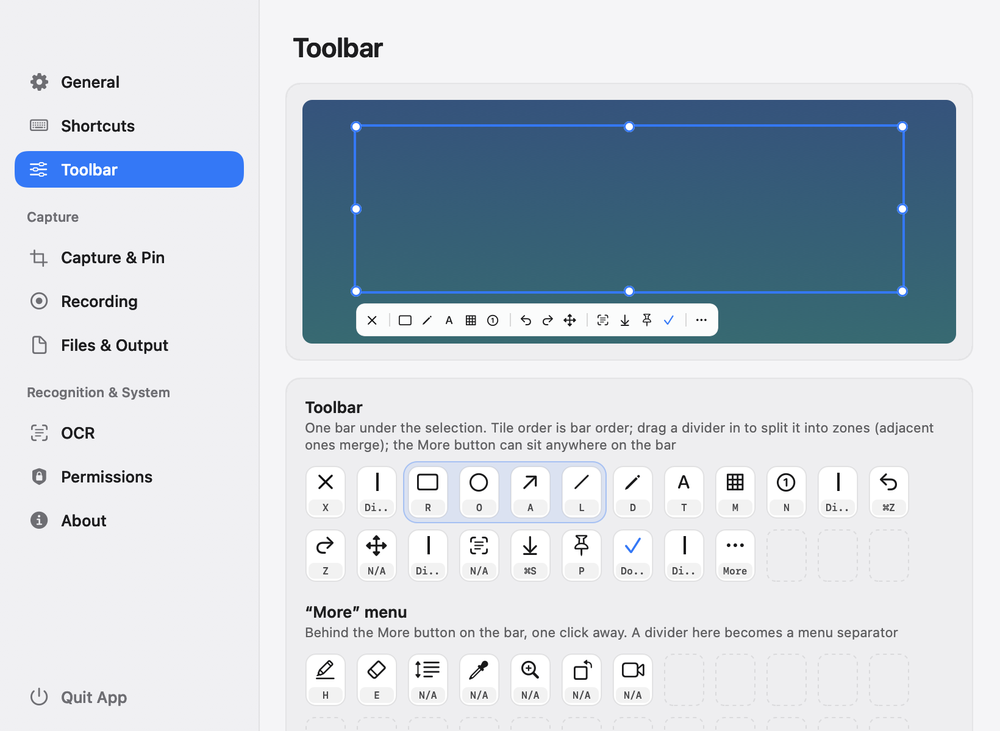

Free screenshot tool for Mac · Capture · Record · OCR
Screenshots, recording and text recognition. Nothing leaves your Mac.

Clip is a free, open-source screenshot tool for Mac. Double-tap ⌘ to frame a region or a window, mark it up, then copy, save or pin it, record it to MP4 or GIF, or copy the text in it. Clip never uploads anything and collects no data; it goes online only when you check for updates. Text recognition runs on your Mac with Apple Vision, and a built-in model takes over when Vision fails. Native AppKit, universal, macOS 14 or later.
No upload. No account. No telemetry.
Clip goes online for one thing: when you choose Check for Updates. Nothing else, ever.
Apple Vision reads first. If it stalls or finds nothing, a built-in model steps in. Both run on your Mac.
Double-tap to start. Double-tap again to copy. Nothing to remember.
Free and open source. Nothing to upgrade to.
Shapes, arrows, pen, mosaic, numbers and text. Every mark stays editable.
The same frame, to MP4 or GIF.
Scroll, and Clip stitches as you go. Fixed headers and footers appear once.
Float a capture above your windows. Pick any color on screen.
Click a window to frame it. Pixel-precise, on every display.
Native AppKit. One app for Apple silicon and Intel.
Put any tool on the bar, in More, or out of sight. Add dividers anywhere.

Shottr is tiny. CleanShot X does the most. PixPin is free and packed. Clip is free, open and stays offline.
| Clip | Shottr | CleanShot X | PixPin | |
|---|---|---|---|---|
| Price | Free · MIT | Pay what you want; asks you to buy | $35 once, or $10 a month with Cloud Pro | Free; optional membership |
| Open source | Yes | No | No | No |
| Goes online | Only when you check for updates | Update check; telemetry you can turn off | Optional cloud uploads | Not stated |
| Screen recording | MP4 · GIF | No | Yes | Video · GIF |
| Scrolling capture | Yes | Yes | Yes | Yes |
| Text recognition | Vision, plus a built-in model | Yes | Yes | On-device |
| Download | 15 MB | 2.3 MB | 48 MB | 127 MB |
Checked on 30 October 2026 against shottr.cc, CleanShot pricing and pixpin.com. Download sizes are the current DMGs linked from Homebrew.
Clip isn’t notarized by Apple. Allow it once on first launch.
Download Clip-0.4.0.dmg, open it and drag Clip into Applications.
Double-click Clip. When macOS says it can’t verify the developer, click Done, then in System Settings › Privacy & Security click Open Anyway.
Accessibility for the ⌘ double-tap, Screen Recording for capture. Clip asks through the system prompts.
Requires macOS 14 or later.
Xcode 26 or later. One script builds, signs, installs to /Applications and launches.
git clone https://github.com/chengffei/clip.git cd clip bash scripts/rebuild-and-open.sh
The Command Line Tools alone cannot build the SwiftUI macros used by the permission panel.
One gesture to start, one to finish.
| Region screenshot | ⌘⌘ double-tap |
| Confirm to clipboard | ⌘⌘ again |
| Cancel | Esc |
| Record, OCR, pin, full screen | Settings › Shortcuts |
Common questions about installing and using Clip.
Double-tap the ⌘ key. Drag a region or click a window, annotate if you like, then press the check mark or double-tap ⌘ again to copy it to the clipboard.
No. Clip has no upload, no account and no telemetry. It goes online only when you choose Check for Updates. Screenshots go to your clipboard or a folder you choose, and text recognition runs on your Mac.
Clip is signed but not notarized by Apple. Open it once and dismiss the warning, then go to System Settings › Privacy & Security and click Open Anyway. You only need to do this once.
Accessibility, so it can see the ⌘ double-tap, and Screen Recording, so it can capture the screen. Clip asks for both through the system prompts.
Clip is free, open source and goes online only when you check for updates. Shottr is smaller but can’t record the screen. CleanShot X does more, with cloud sharing, and costs $35. PixPin is free with more features, but closed source and 127 MB.
Yes. Clip is free and open source under the MIT License.